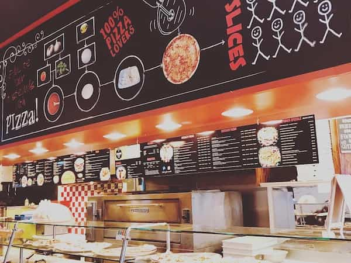
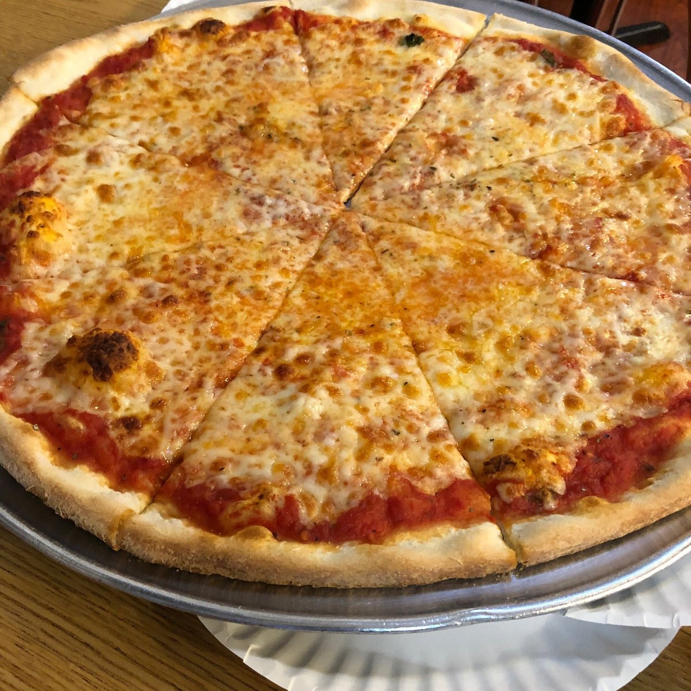
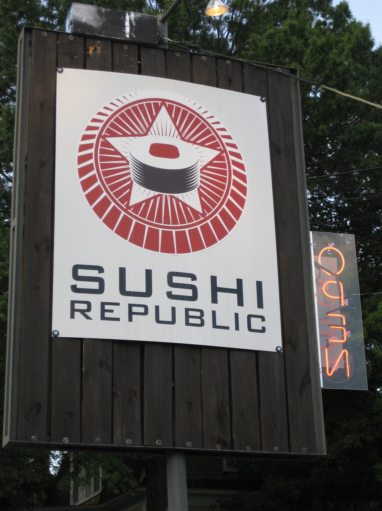
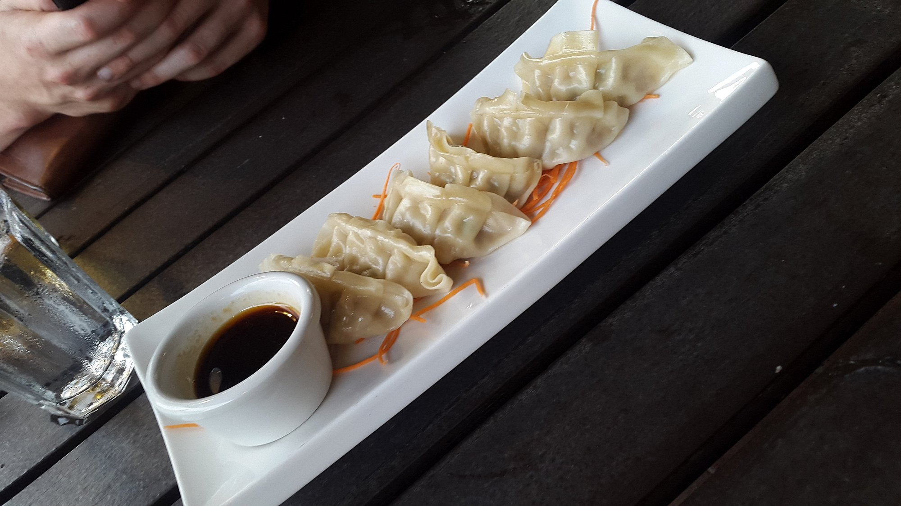
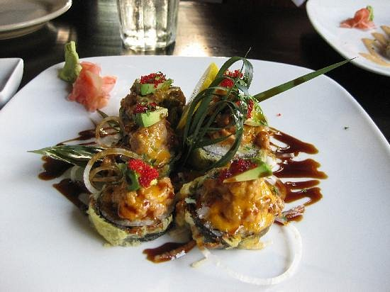
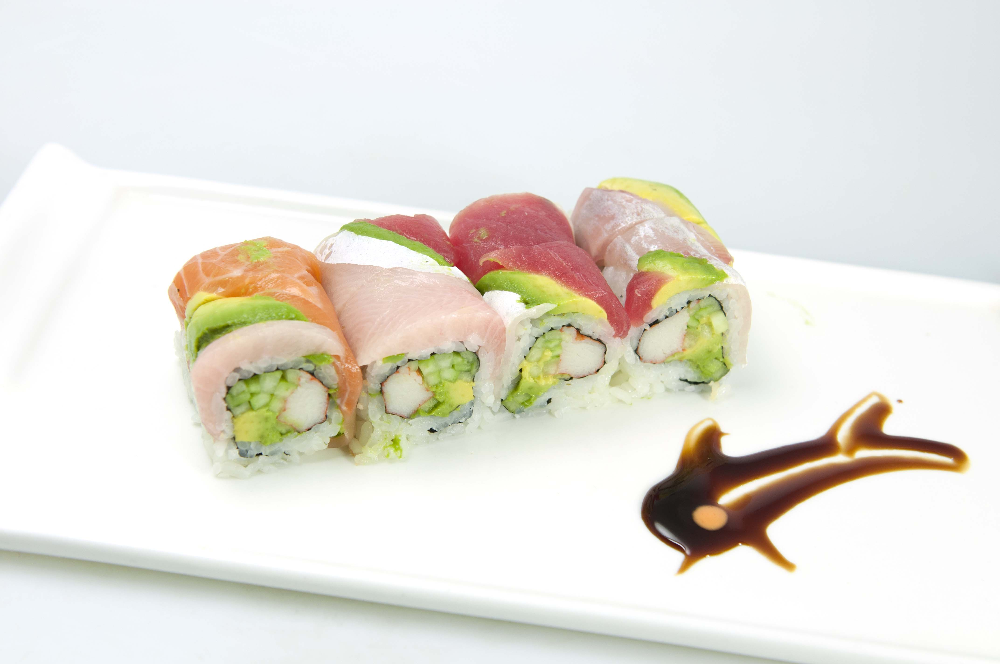
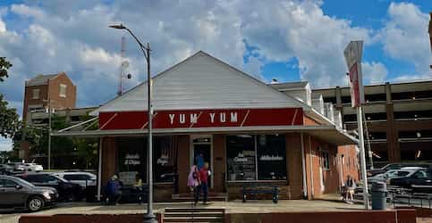
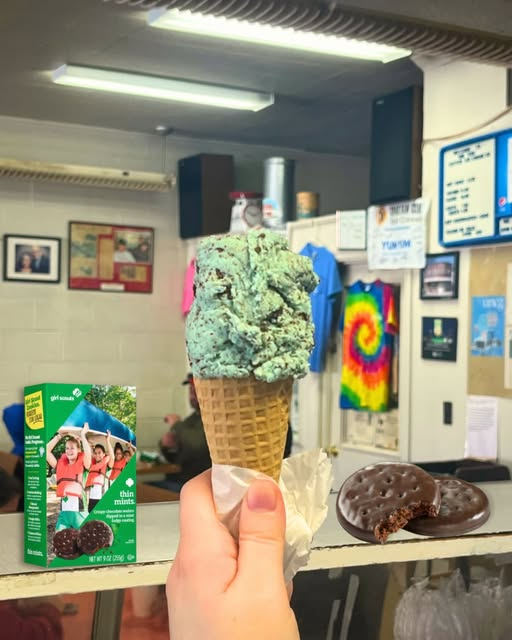
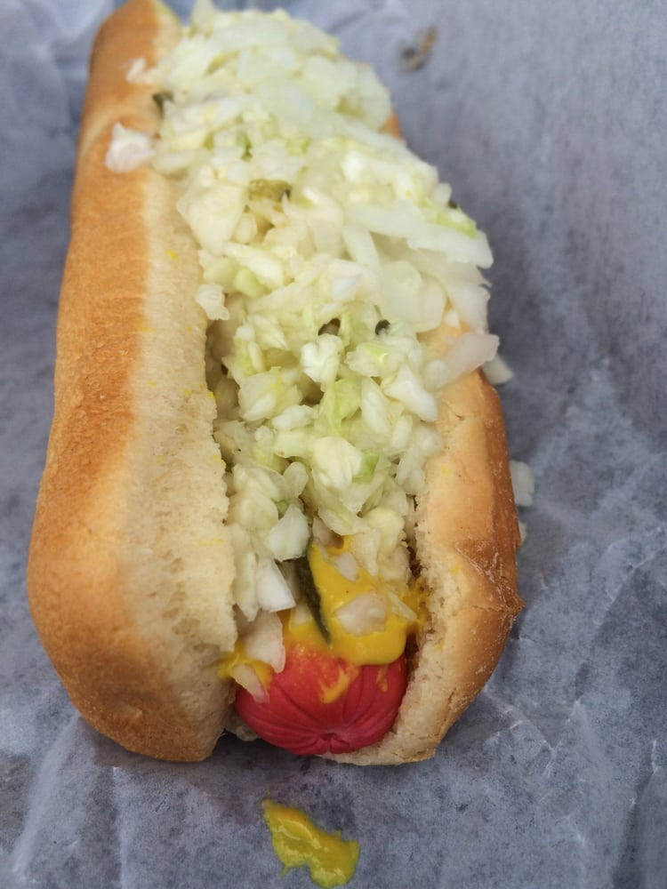
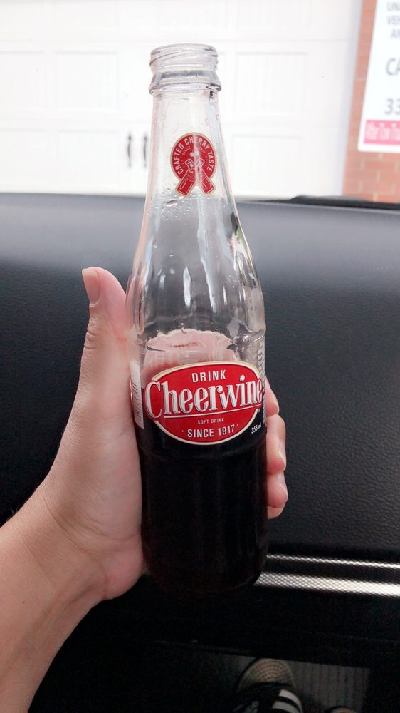

Whether you're a student, resident, or visitor, this is your guide to the best food near the Petty
Building.
I have tried many restaurants in the area and compiled a small list of recomendations for good eats.
Here are my top three places with their best items!
Slices Pizza by Tony

Location: 401 Tate Street Greensboro, NC 27403.
Phone: (336) 378-1932
Hours: 11:00 AM - 10:00 PM. Mon, Tue, Wed, Thur, Fri, Sat.
They have great pizza and calzones.

Cheese Pizza
You can't go wrong with cheese and pizza, and Tony does it right. At $11.99 (small), it's great
for students on a budget.
Margharita Pizza
A slices best seller. Fresh and simple, but the taste is anything but basic.
image source: Wikipedia (CC BY-SA)
Steak Calzone
Warm, savory, and super cheesy with homemade marinara sauce.
It's filling and easy to eat on the go.
Sushi Republic

Loocation: 329 Tate St, Greensboro, NC 27403
Phone: (336) 274-6684
Hours: Monday-Friday 11:30AM - 9:30PM
Sat. 5PM - 10PM. Closed Sunday.
Japanese-Asian fusion with a focus on great sushi.

Pork Gyoza
Whether pan fried or steamed, you get the perfect pork filled start to your sushi snacking.

KMS Fried Sushi
If raw seafood isn't your forte, then crunchy fried crab, asparagus, cucumber roll with spicy tuna, avocado, and eel sauce is a great alternative (Dinner Item).

Rainbow Roll
A classic california roll with a colorful variety of stacked fish on top. Vibrant both in taste and visuals
Yums Yums Better Ice Cream

Location: 1219 Spring Garden St, Greensboro, NC 27403
Phone: (336) 272-8284
Hours: Tuesday-Friday 10:30AM - 9:00PM
Mon. and Sat. 10:30AM - 5:30PM. Closed Sunday.
Cash-only mainstay turning out ice cream & hot dogs since 1906 amid an old-school family-run vibe.

Ice Cream Cones
When you want to satify your dessert cravings, get a cone with your flavor choice from mint to chocolate almond.

Hot Dog
On a time crunch? Is the wallet looking stingy? For $1.80, get yourself a hot dog with all the works.

Cheerwine
A North Carolina staple in a classic glass bottle. Paired great with a hotdog or just as a refreshing drink.